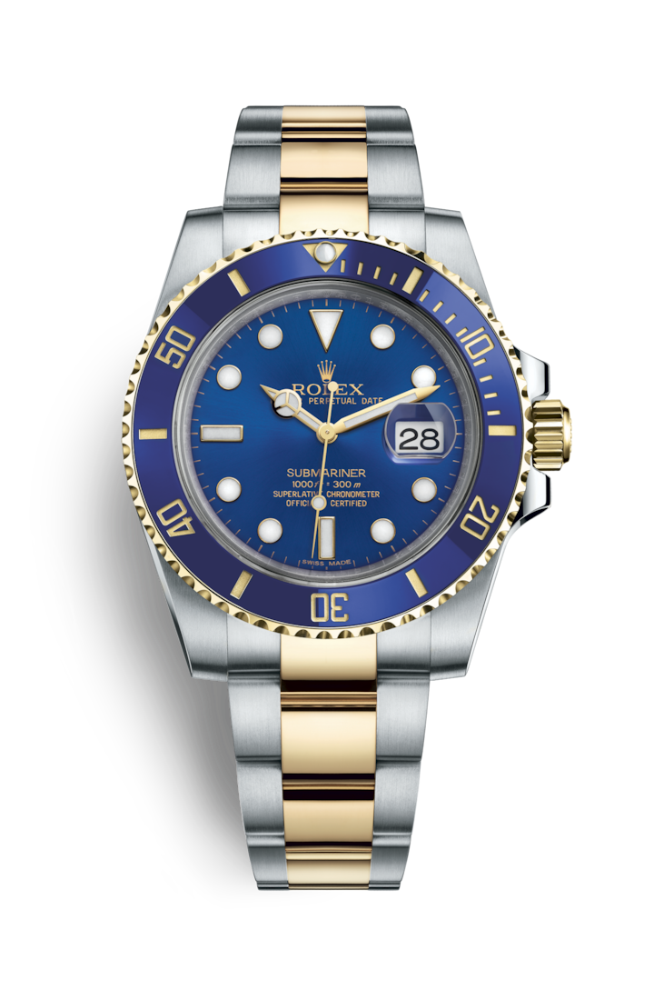

"Характеристика модели"
Rolesor
Золото ценится за его блеск и благородный характер. Сталь олицетворяет собой прочность и надежность. Вместе они образуют очень выгодное сочетание. Биметаллическое исполнение Rolesor, фирменная особенность Rolex, появилось в начале 1930‑х годов, а сама торговая марка – в 1933 году. Сегодня это одна из ключевых особенностей коллекции Oyster.
Синий циферблат
По циферблату легко узнать часы Rolex. Он отражает стилистику бренда и обеспечивает отличную читаемость показаний. Отметки на всех циферблатах Rolex изготавливают из 18‑каратного золота, благодаря чему они не тускнеют со временем. Каждый циферблат Rolex разрабатывается и изготавливается в стенах компании, причем большая часть операций выполняется вручную, с тем чтобы добиться максимального совершенства.
Браслет Oyster
Браслет Oyster, отличающийся прочностью и удобством, – это совершенное сочетание формы и функциональности, эстетики и технологических достижений. Он оснащен застежкой Oysterlock, предупреждающей случайное расстегивание, а также оригинальной застежкой Glidelock, которая позволяет увеличить длину браслета без помощи каких-либо устройств, тем самым обеспечивая удобное и надежное крепление часов поверх водолазного костюма.
Механизм 3135
В данной модели установлен калибр 3135 с автоматическим подзаводом, полностью разработанный и изготовленный мастерами Rolex. Как и все механизмы Rolex Perpetual, калибр 3135 имеет сертификат швейцарского хронометра, выдаваемый сверхточным часам, успешно прошедшим тестирование в Официальном швейцарском институте хронометрии (COSC). Он оснащен спиралью Parachrom, обеспечивающей более надежную защиту от сотрясений и температурных изменений. Конструкция, одинаковая для всех механизмов коллекции Oyster, придает модели несравненную надежность.
"Полное описание модели"
Прочный и функциональный дизайн часов Rolex Submariner быстро стал легендой. Благодаря искусно модернизированному корпусу Oyster, выразительному циферблату с крупными светящимися часовыми отметками, а также вращающемуся градуированному безелю Cerachrom и прочному браслету Oyster, новейшее поколение часов Submariner и Submariner Dateвозрождает традиции исторической модели, выпущенной в 1953 году.
|